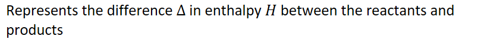
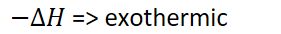
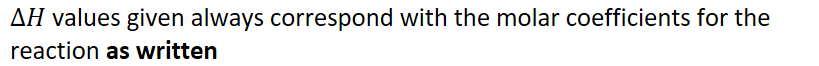
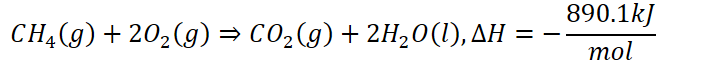
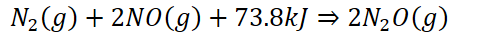

Enthalpy-of-reaction
Enthalpy of reaction
-
Enthalpy change of a reaction: the amount of heat energy released or absorbed by a chemical reaction at constant pressure
-
 {width="3.21875in" height="0.3541666666666667in"}
{width="3.21875in" height="0.3541666666666667in"} -
{width="8.53125in" height="0.6875in"}
- All reactions in AP will be at constant pressure
-
Same rules apply:
-
{width="2.9270833333333335in" height="0.3541666666666667in"}
- Vice versa
-
-
{width="8.53125in" height="0.6875in"}
-
Example:
-
{width="7.385416666666667in" height="0.65625in"}
-
For every mole of CH
4that combusts, 890.1 kJ are released
-
-
-
Heat can be treated like a product if exothermic
- {width="6.625in" height="0.3333333333333333in"}
-
Heat can be treated like a reactant if exothermic
- {width="5.229166666666667in" height="0.3333333333333333in"}